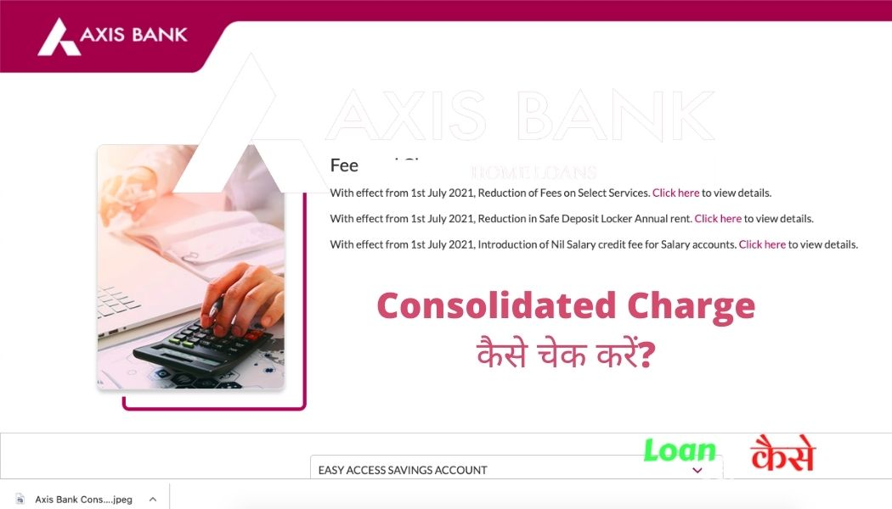

नमस्कार दोस्तों आज की इस पोस्ट में हम आपको बताएंगे Axis Bank Consolidated Charge Kya hota hai? अगर आप Axis Bank के Customer हैं ,तो आपको पता होगा कि हर महीने या तीन माह पर (Quaterly) Axis Bank द्वारा Consolidated Charges के रूप में कुछ पैसे आपके खाते से काट लिया जाता है।
कभी-कभी Axis Bank द्वारा Consolideted charge ज्यादा काट लिया जाता है ₹400 से ₹500 तक काट लिया जाता है,ऐसा अगर आपके साथ भी हो रहा है तो इस पोस्ट को अंत तक पढ़िए , आज के लेख में हम आपको बताने वाले हैं। की आप अपने खाते में लगने वाले Axis Bank Consolideted Charges को कैसे चेक करेंगे कि किस कारण से आपका पैसा कटा है साथ ही आपको ये भी बताएँगे कि Axis Bank Consolidated Charge को कैसे बंद करना है?
तो आइए जानते हैं कि Axis Bank Consolidated Charge क्या होता है?Axis Bank Consolidated Charge को कैसे चेक करते हैं और इस तरह के Axis Bank Consolidated Charge को कैसे बंद कर सकते हैं?
{kind=link}
लोन के बारे में ज़्यादा जानकारी के लिए इसे भी पढ़िए:-
| Loan Agent (DSA) कैसे बनें? | Home loan Pre closer करना चाहिए या नहीं ? |
| Chola Finance Personal Loan Kaise Milega? | Loan margin money क्या होता है? |
Axis Bank Consolidated Charge Kya Hota hai?
दोस्तों जैसा कि आपको पता है Axis Bank मैं आप कई अलग अलग तरह के खाते अपने जरूरत के हिसाब से खोल सकते हैं। सभी तरह के खाते के अपने अपने कुछ लिमिटेशंस (Limitations) होते हैं जैसे कि ट्रांजैक्शन लिमिट (Transaction Limit), चेक बुक लिमिट (cheque Book Limit),इंटरनेट बैंकिंग का लिमिट,यूपीआई लिमिट (upi limit), ऑनलाइन शॉपिंग लिमिट इस तरह के कई लिमिट आपके खाते में होते हैं।
ऐसे में अगर आप खाते की लिमिट से अधिक कोई ट्रांजैक्शन करते हैं या बैंक कि कोई भी ऐसी सर्विस (Service) को use करते हैं,जो आपके खाते में फ्री में Available नहीं है तो ऐसे सर्विस को Use करने पर Axis Bank Extra Charge (Including GST) आपके खाते से काट लेता है,इसे हम Consolidated Charge कहते हैं।
दोस्तों मेरा Axis Bank में खाता है,मेरे खाते में से इस बार ₹300 काट लिया गया है क्योंकि,मेरा Account (खाता) जो है इसमें कुछ लिमिट है मेरे Account (खाता) में लिमिट है कि मैं Cash का ट्रांजैक्शन Branch में जाकर नहीं कर सकता हूं मैंने ब्रांच जाकर Cash का ट्रांजैक्शन किया है जिसके कारण मेरे खाते से ₹300 काट लिए गए हैं।
इन कारणों से Axis Bank Consolidated Charge कट सकता है :-
दोस्तो Axis Bank Consolidated Charge अपने आप ही नहीं कटता है कोई ना कोई कारण होता है ,बैंक के services को ज़रूरत से ज़्यादा या लिमिट से ज़्यादा उपयोग करने पर Axis Bank Consolidated Charge कटता है।
दोस्तों आइए अब हम जानते हैं किन कारणों से ये Axis Bank Consolidated Charge आपके खाते से काटे जाते हैं ,अगर आपके भी खाते से ये चार्ज काटा है तो हो सकता है इंही में से कोई ना कोई कारण रहा होगा:-
#1.ATM Transaction Limit charges
दोस्तों Axis Bank ही नहीं दूसरे अन्य बैंक भी पाँच बार से ज़्यादा ATM से पैसे निकलने पर Bank Consolidated Charge लगभग बीस रुपय काटते हैं । इसीलिए आपको ध्यान रखना है की आपने एक महीने में कितने बार ATM से पैसे निकले हैं।
#2.Cash Deposite Limit (नगद जमा शुल्क)
दोस्तों Axis Bank के सभी तरह के Accounts के अलग अलग Limitation होते हैं ,ऐसे में अगर आप ज़्यादा बार या लिमिट से ज़्यादा पैसे बैंक में cash deposite करवाते हैं तो आपको इसके लिए भी Axis Bank Consolidated Charge देने परेंगे।
#3. Low Minimum Balance Consolidated charge
दोस्तों जब आप अपना Account किसी भी बैंक में खुलवाते हो तो अगर आपका zero Balance Account है तब तो कोई बात नहीं ,लेकिन अगर आपका खाता normal Account है तो आपको उस बैंक खाते के Minimum बैलेन्स को हर महीने mantain करते रहना होगा ,अगर आपका बैलेन्स कम रहेगा तो आपको Axis Bank Consolidated Charge देना परेगा ।
आज के समय में Axis Bank Average monthly Balance (Metro – Rs. 10,000, Urban – Rs. 10,000, Semi-Urban – Rs. 5,000, Rural – Rs. 2,500) होना चाहिए।
#4.Axis Bank Cheque Bounce Charge
दोस्तों अगर आप किसी भी व्यक्ति को कुछ पैसे के लिए चेक देते हैं और इतना पैसा अगर आपके खाते में नहीं है तो आपका चेक बाउंस हो जाएगा। उदाहरण के लिए जैसे अगर आपने किसी श्याम नाम के आदमी को ₹5000 का चेक दिया और अगर आपके खाते में 5000 से कम रुपए हैं तब अगर श्याम उस चेक को लेकर बैंक में पैसे लेने जाता है तो उसे पैसे नहीं मिलेंगे और वह चेक बाउंस हो जाएगा। चेक बाउंस हो जाने के कारण आपको कंसोलिडेट चार्ज देना पड़ जाएगा।
#5. Axis Bank Debit Card Consolidated Charge:-
दोस्तों अगर आप एक्सिस बैंक या किसी अन्य बैंक का डेबिट कार्ड यूज करते हैं तो आपको उस डेबिट कार्ड को यूज करने के लिए प्रत्येक वर्ष कुछ चार्ज देने पड़ते हैं यह चार्ज सभी बैंक के अलग-अलग होते हैं लगभग एक सौ रुपए से ₹300 तक का कंसोलिडेट चार्ज आपको डेबिट कार्ड के लिए देना पड़ सकता है।
#6. Mobile SMS Alert Charge
अगर आप अपने खाते में s.m.s. अलर्ट एक्टिवेट करवाए हुए हैं यानी कि आपके खाते के लेनदेन का विवरण अपने मोबाइल पर लेते हैं उसके लिए भी आपको 15 से ₹20 प्रत्येक 3 महीने पर देने पड़ सकते हैं यह भी एक तरह का कंसोलिडेट चार्ज माना जाता है।
#7.New Cheque Book Request charge
अगर आप किसी को चेक देते हैं तो आपको उस चेक के बदले ₹2 से ₹5 तक का एक्स्ट्रा कंसोलिडेट चार्ज उस चेक को क्लियर करने के लिए काटा जा सकता है, इसके अलावा अगर आप बैंक से न्यूज़ चेक बुक लेते हैं उसके लिए भी आपको एक्स्ट्रा कंसोलिडेट चार्ज देना पड़ सकता है।
#8. Axis Bank Demand Draft (DD) Charge
किसी के Favour में अगर आप कोई डिमांड ड्राफ्ट बनवाते हैं तो उसकी मान ड्राफ्ट का भी आपको फीस बैंक को देना पड़ता है, यह फीस लगभग ₹60 से एक सौ रुपए तक का होता है।
#9. Certificate Issuing consolidated Charge by Axis Bank
अगर आप बैंक से कोई सर्टिफिकेट लेते हैं जैसे TDS सर्टिफिकेट,NOC सर्टिफिकेट या कोई अन्य सर्टिफिकेट जो आपको आपके खाते से संबंधित हो तो आपको उसके लिए भी एक्स्ट्रा कंसोलिडेट चार्ज देना पड़ सकता है।
Axis Bank Consolidated Charge कैसे चेक करें?
- इसके लिए सबसे पहले आपको अपने Axis Bank के Account (खाता) में मोबाइल बैंकिंग या नेट बैंकिंग से लॉगिन कर लेना है। (Axis bank net banking login)
- उसके बाद आपको अपना स्टेटमेंट देखना है।आपका जिस डेट में पैसा कटा है उस डेट का आपको स्टेटमेंट देखना है कि वह पैसा क्यों काटा है।
- यहां पर आप देखेंगे कि आपका जो ट्रांजैक्शन हुआ है उसका डिटेल दिया हुआ रहेगा यहां पर किस Date में कटा है और कितना पैसा कटा है और वह किस कारण से काटा है सारा का सारा details आपको यहां पर मिल जाएगा। अगर आपका पैसा Consolidated Charge के रूप में कटा है तो आपको यहां पर समरी दिखेगा कि कोंसलिडटेड Charge इससे आप समझ सकते हैं कि आपका पैसा किस कारण से कटा है।
- यह तो हो गया स्टेटमेंट चेक करके पता करने का तरीका, आगे आपको बताते हैं कि आप किस तरह से इस ऐक्सिस बैंक कन्सॉलिडेट चार्ज को बंद कर सकते हैं ?
Axis Bank के सभी चार्ज कैसे पता करें?
- Axis Bank के Account (खाता) में Login करने के बाद आपको अपने नेट बैंकिंग के होम पेज पर चले जाना है।
- उसके बाद आपको टॉप में कुछ मेनू देखेंगे उसमें एक मोर सर्विसेज (More Services) का Menu होगा उस पर जब आप अपना माउस प्वाइंटर ले जाएंगे तो आपको नीचे स्क्रोल करने पर गेट Account (खाता) चार्जेस का एक ऑप्शन मिलेगा उस पर क्लिक कर देना है।
- यहां पर आप अपने Axis Bank Account (खाता) के कोंसलिडटेड Charge के अलावे कोई भी चार्ज जो आपके Axis Bank Account (खाता) पर लगाए गए हैं देख पाएंगे, जैसे कि SMS चार्ज ,ट्रांजैक्शन चार्ज ,इंटरसिटी चार्ज किसी प्रकार का चार्ज आपको यहां पर देखने को मिलेगा।
- दोस्तों यहां पर आपको वहीं चार्ज दिखाई देंगे जो आपके Account (खाता) से काटे गए हैं, Axis Bank खाते से जो कोंसलिडटेड Charge कटते हैं सिर्फ वही यहाँ पर दिखेंगे लेकिन आपके खाते से कोंसलिडटेड Charge के अलावे 18% जीएसटी एक्स्ट्रा काटे जाते हैं वह आपको यहां पर नहीं दिखेंगे।
- उदाहरण के लिए अगर आपको यहां पर Axis Bank कंसोलिडेट ₹100 दिखा रहा है तो इस पर 18% जीएसटी यानी कि ₹18 जोड़कर कुल ₹118 आपके खाते से काटे जाएंगे।
Axis Bank Consolidated Charge Stop (बंद) कैसे करना है?
दोस्तों आइए जानते हैं कि Axis Bank खाते में लगने वाले Charge को कैसे हम बंद कर सकते हैं या कम कर सकते हैं।
{kind=link}

कैसे चेक करें?( Image Credit -Axis Bank)
दोस्तों Axis Bank के इस Charge को हम बंद नहीं कर सकते लेकिन इस इससे बचा जा सकता है,आपको सबसे पहले चेक करना है कि आपका Axis Bank का Account (खाता) किस टाइप का है ,आपके खाते के क्या क्या लिमिटेशन है यह आपको Axis Bank के Official वेबसाइट पर देखने को मिलेगा।
- आपको यहां आकर चेक करना है कि आप अपने खाते में क्या-क्या ट्रांजैक्शन फ्री में कर सकते हैं और किस-किस ट्रांजैक्शन के लिए आपको Consolidated Charge देने होंगे जैसे आपका एटीएम का ट्रांजैक्शन लिमिट कितना है, आप ब्रांच पर जाकर कितने का कैश डिपॉजिट या डेबिट कर सकते हैं ,इन सब चीजों को देखना है आप के खाते का जो लिमिट है उसी लिमिट के अंदर आपको अपने Account (खाता) को Operate करना है। ऐसा करने से आप किसी भी तरह के Consolidated Charge से बच सकते हैं।
- Axis Bank के Charge से बचने का एक और तरीका है आप अपने Account (खाता) को Upgrade करवा सकते हैं ऐसा करने से आप के खाते का ट्रांजैक्शन लिमिट बढ़ जाएगा और कुछ एक्स्ट्रा फैसिलिटी भी आपको दिया जाएगा, जिससे आपको कोई एक्स्ट्रा Consolidated Charge नहीं देना होगा।
- दोस्तों Axis Bank के Consolidated Charge को बंद करने का एक और तरीका है आप Axis Bank के कस्टमर केयर को कॉल कर सकते हैं और उन्हें आपके खाते पर लगने वाले Consolidated Charge को बंद करने के लिए बोल सकते हैं।
Axis Bank कस्टमर केयर नंबर क्या है?
रिटेल फोन बैंकिंग के लिए Axis Bank कस्टमर केयर के दो नंबर दिए गए हैं
For Retail and Phone Banking User contact number
- 1860 419 5555 (Toll free)
- 1860 500 5555 (Toll free)
Agri and Rural
- 1800 – 419 – 5577 (Toll free)
Axis Bank Consolidated Charge Refund कैसे मिलेगा?
दोस्तों Axis Bank का Consolidated Charge रिफंड तभी मिलेगा जब बैंक के गलती से आपका पैसा कटा होगा ,अगर आप अपने खाते के लिमिटेशंस से अधिक कोई भी एक्टिविटी किए होंगे जैसे अगर आप के खाते का ट्रांजैक्शन लिमिट ₹100000 है ,और आप उससे ज्यादा का ट्रांजैक्शन करते हैं तब आपको Consolidated Charge काटा जाता है, और आप इस चार्ज के लिए जब रिफंड क्लेम करेंगे तो आपको रिफंड नहीं मिलेगा वहीं अगर बैंक गलती से आपके खाते से कोई चार्ज काट लेता है तभी आप रिफंड ले पाएंगे।
Axis Bank कंसोलिडेटेड डीपी चार्ज क्या होता है (what is consolidated DP charges in axis bank)?
Axis Bank कंसोलिडेटेड डीपी चार्ज वह चार्ज है जो आपके Axis Bank के खाते से लिंक डीमेट या ट्रेडिंग Account (खाता) मैं होल्ड किए गए फंड के लिए प्रतिवर्ष काटा जाता है यह एक Annual चार्ज होता है,.
कंक्लूजन (निष्कर्ष:)
तो दोस्तों आज हमने जाना की Axis Bank Consolidated Charge क्या होता है ,Axis Bank के Consolidated Charge को हम बंद कैसे कर सकते हैं? दोस्तों अगर आपको इसके बारे में और भी कुछ जानना है तो आप नीचे कमेंट करिए मैं उसका रिप्लाई दूंगा अगर आपको यह पोस्ट अच्छी लगी हो तो अपने दोस्तों के साथ जरूर शेयर करें ताकि उन्हें भी इसके बारे में कुछ जानकारी मिल सके धन्यवाद।
Consolidated Charge क्यों काटा जाता है?
बैंक के द्वारा दिए जाने वाले सर्विसेज़ के अलवे कोई अलग से सर्विस ली जाती है तो उके बदले बैंक Extra Charge,Consolidated चार्ज के रूप में काटता है।
एक्सिस बैंक का मिनिमम बैलेंस चार्ज कितना है?
प्रतेक 100 रुपए के लिये 5रुपए या 500 रुपए जो भी कम हो।
क्या एक्सिस बैंक कंसॉलिडेटेड चार्जेज रिफंड कर सकता है?
बैंक की गलती से कटेगा तभी रिफ़ंड होगा नहीं तो नहीं होगा।